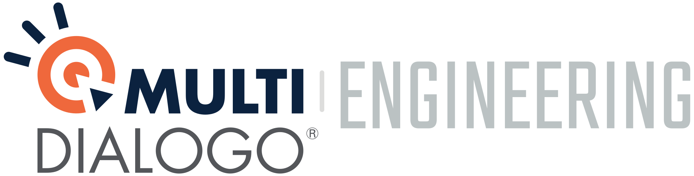

Multidialogo is a service company based in Italy.
We offer a suite of web based services dealing with multichannel messaging (postal, email, certfied email, fax, sms, Multicerta), in critical context where the communication and its feedback need to be promptly guaranted to the sender with legal value compliance.
We also provide a distribute service, Multifatture, for the dispatch, receipt and store electronic invoices to integrate with the italian revenue agency (Agenzia delle Entrate), and some facilities for the management of tax withholdings: Multicaf.
Open source projects
We love community and also to share our code trought open source side projects.
Team building platform
The team building platform is our internal software we use to organize activities between colleagues, it’s open source and we are glad to share it to the community in order to improve it and share the fun.
We are hiring!
In Multidialogo we are hiring sofware developers for the Parma (Italy) headquarter.
For non-entry-level position we also offer remote working.
Open positions
Here you can find some of our open positions for the development team:
- Backend web developer Parma (Italy) + remote
- Web developer stage Parma (Italy)
Development challenges
Join one of ours Multidialogo development challenges!
We are looking for motivated team mates to join us and so contributing to our projects on github is an exceptional way to get in contact with our development team and start knowing us and our values.
Here is our challenges list, to participate follow the instructions provided with the links:
| Position | Stack | Challenges | Active | Assigned | Past |
|---|---|---|---|---|---|
| Devops | AWS\Docker | Visit Devops challenges page | 0 | 0 | 0 |
| Backend | Python\Django | Visit Python challenges page | 1 | 0 | 0 |
| Backend | php | Visit php challenges page | 0 | 0 | 0 |
| Backend | Java\Spring | Visit Java challenges page | 0 | 0 | 0 |
| Frontend | Javascript\Node | Visit Frontend challenges page | 0 | 0 | 0 |
| Designer | Visit Design challenges page | 0 | 0 | 0 |